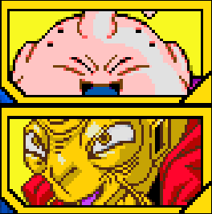
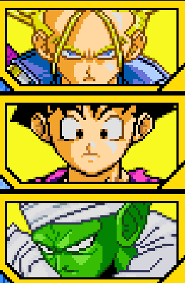

A sa naissance, Broly possède une puissance hors norme pour un Saiyan, ce qui inquiète le Roi Vegeta qui ordonna son exécution ainsi que celle de son père Paragus Laissés pour compte dans les décombres de la planète Vegeta, alors qu'elle était sur le point d'être anéanti par Freezer, le pouvoir latent de Broly refit surface et protégea l'enfant et son père, depuis ce jour Parafus jura de se venger de la famille royale. Bien des années plus tard, Paragus se présenta devant le prince Vegeta qui vit aujourd'hui sur Terre. Pour le vaincre il utilisa un stratagème assez sournois, il prétexta l'existence d'une Nouvelle Planète Vegeta et d'un Super Saiyan Légendaire qui détruisait tout, afin d'attirer Vegeta dans un piège. En allant sur place, Vegeta se rendit compte de la supercherie, Paragus expliqua que tout ceci est dans le but de l'exterminer avec l'impact de la comète sur la planète, mais il activa son plan B qui était de lancer Broly sur Vegeta, avant même que Vegeta se rendit compte que le Super Saiyan Légendaire n'était nul autre que le fils de Paragus, Broly qui dans un accès de rage intense, se jetta sur le prince.


Après avoir écrasé Vegeta, Paragus demanda à Broly de passer à l'étape suivante qui est d'exterminer les rebus de la planète et d'aller exterminer les autres Saiyans. Pour cela il alla sur la Nouvelle Planète Vegeta pour anéantir les Saiyans à la solde de Freezer. Mais entre temps Freezer tomba sous l'épee de Trunks, le véritable pouvoir du groupe se situe chez Cooler. Les deux groupes se rencontrèrent, les hommes de Cooler voyant que la puissance de Broly ne semble pas dépassé les 10 000 unités décident de s'en charger eux-mêmes, mais en vérité, ils ne savaient pas que Broly cachait sa puissance. Broly écrasa la flotte de Cooler avec Cooler lui-même. Grâce à Broly, Paragus et lui pourront débuter la construction d'un empire.

Battre Vegeta.


Depuis que Broly a vaincu le fils de bardock, Goku, Paragus s'inquiète de la prise de résolution de Broly, il devient incontrôlable. Paragus essay de trouver un moyen de calmer son fils et pour cela il emmena son fils sur Terre pour endiguer son énergie, où sur Terre en l'absence de Goku et de ses amis, Cell s'en donne à coeur joie en massacrant tout .Broly arrivant sur les liens en sentant le Ki de Goku, alla voir la source est fut nez-à-nez avec Cell l'Ultime création du Docteur Gero. Le cyborg fut surpris de voir un saiyan autre que Goku avec une telle énergie. Cell s'ennuyant et voyant que Broly souhaite se battre, accepte le combat avec le Super Saiyan Légendaire. Le combat faisait rage, tout aux alentours était réduit à néant, mais la fureur de Broly était telle qu'une violente décharge lumineuse irradie de son corps, Cell se fit anéantir par la décharge énergétique de Broly.
Débloque l'Attaque Ultime "Météore blaster"


Le combat entre Cell et Broly faisait trembler la Terre et l'immense énergie dépensée dans ce combat, profite à une personne. Son nom est Babidi, le terrible sorcier qui utilisa cette énergie pour ramener Boo à la vie. Boo fut ramené et demanda à combattre Broly. Les deux êtres se rencontrèrent et Broly arrogant et sûr de sa puissance, traita Boo d'idiot et assurant que personne n'est plus fort que lui. Les deux monstres se mirent à combattre. Finalement le Majin se fit désintégrer par Broly et Babidi le suivit dans la tombe. Désormais plus rien ne pouvait arrêter Broly et Paragus, la galaxie était à eux. Goku est mort et plus personne ne peut s'opposer à eux. Paragus réfléchissait déjà à la nouvelle planète à conquérir, Broly pensait à Kakarot , après avoir entendu son père dire ce nom qui maintenant n'est plus de ce monde. Malheuresement Paragus n'avait pas compris que seul Goku/Kakarot ceoncentrait l'attention de Broly. Un jour Broly se lancera dans un effroyable carnage. Et ce jour approche ....



Bien que le stratagème de Paragus avait en parti fonctionner, Vegeta n'était pas vaincu et Gohan et Trunks arrivent peu après pour mettre au clair toute cette mascarade, Piccolo également viendra s'ajouter aux combattants essayant d'arrêter Broly, mais Broly rigole en les comparant à des insectes. Alors que Broly démolissait la Z Team et que c'était sans espoir pour nos héros, soudainement Goku apparut. A ce moment là, dés que Broly vit Kakarot, le temps sembla totalement figé, ne voyant plus que lui et Goku.

Terminer le combat contre Vegeta en faisant un Ultimate KO.


Broly écrasé Vegeta et s'occupa également de Trunks et Gohan. Tout se passait comme prévu, sauf à une chose prête, Goku alias Kakarot était là et c'est à ce moment là que la rage meurtrière de Broly atteint son pic. A ce même moment la comète allait s'écraser sur la planète, mais également un combat plus que sanglant entre 3 Super Saiyans.
Débloque la compétence "Bats Carot !"


Après avoir vaincu toute la Z-Team, il est désormais le guerier le plus fort de l'Univers. Paragus voyant le carnage décide de partir avec son fils.
Débloque l'Attaque Ultime "Pluie machine"


Metal Cooler rassemble les 7 boules de cristal et ramène à la vie le Commando Ginyu, Zarbon et Dodoria. Le commando Ginyu comme à son habitude fait une pose en groupe pour célébrer leur renaissance, ce qui laisse Cooler de marbre. Le capitain propose même à leur seigneur de se joindre, ce qui comiquement fait déjà regretter Cooler de les avori rappelé. Zarbon et Dodoria viennent et avertissent qu'il y a de grandes puissances dans les alentours, Cooler en profite pour voir la vraie puissance de ses soldats. En allant sur place, on voit le Dr Gero avec les cyborgs en train de rechercher Son Goku, alors qu'ils détruisaient tout sur leur passage, Metal Cooler arriva et fut étonné de voir que les terriens ont créer des corps cybernétiques. Les cyborgs furent étonnés de voir l'armée de Cooler et ce dernier déclara qu'ils alimenteront la puissance des Metal Coolers. Metal Cooler et son armée écrasa les cyborgs impuissants qui viendront alimenter la puissance de Metal Cooler.

Terminer le combat contre Goku et Vegeta.


Après avoir absorbé les cyborgs, l'Etoile du Grand Guedester gagna en puissance. Cependant un problème survient, pendant que Ginyu et son groupe réfléchissait à une pose groupée où Cooler pourrait être intégré, Dodoria signala qu'un mosntre se nourrit de la force vitale des troupes dans la capitale de l'Ouest, aussitôt Cooler et les autres se préparèrent au combat. Etant désormais sur palce, le monstre en question était Cell qui cherchait sa forme parfaite et voyant Cooler qui ne peut être absorbé, mais en revanche Metal Cooler voit un être comme Cell intéressant a absorbé et un combat s'en suit entre les deux. Après avoir vaincu Cell, l'étoile Big Gete Star absorba le cyborg. Mais cet ordre aura de lourdes conséquences innatendues par la suite, Cell encore conscient, vit C-17 et C-18 dans le même endroit, prêts à être absorbés, maintenant il est parfait .

Terminer le combat contre les Cyborgs.


Alors que le combat continuait, Broly échappa au contrôle de Paragus, plus rien ne pouvait le restreindre maintenant. Alors que la comète allait s'écraser sur la planète et ne voyant plus rien pour contrôler son fils, paragus décide de l'abandonner à son sort, mais Broly le rattrape, broie sa capsule spatial et l'envoie sur la comète, le tuant sans chance de survie. Après ça la comète s'écrasa et raya la Nouvelle Planète Vegeta de l'Univers, laissant Broly également pour mort.
Débloque la compétence "Résurrection".

Terminer le combat contre Piccolo en perdant 2 Metal Cooler.

7 années ont passées depuis l'explosion de la Nouvelle Vegeta. Broly était en vérité toujours en vie et a put s'échapper de la catastrophe en prenant un vaisseau et après avoir dérivé dans l'espace, arriva sur Terre, insconscient et plongeant dans un sommeil de 7 ans. Toutefois depuis le combat contre Cell, Goku avait déjà rejoint l'Autre Monde. broly avait atteri non loin de l'endroit où Gohan et les autres étaient. Broly réveillé, commença à se déplacer et dés qu'il vu Goten, le fils cadet de Goku, qui est le portrait craché de son père, il laissa libre cours à sa folie furieuse. Les deux enfants voyant le danger que représente cet immense Saiyan, décide de fusionner et d'affronter Broly. Alors que Gotenks allait passé aux choses sérieuses, la fusion se défait et les deux petits ont du prendre la fuite.
Débloque la compétence "Résurrection".

Terminer le combat contre Piccolo en perdant 2 Metal Cooler.